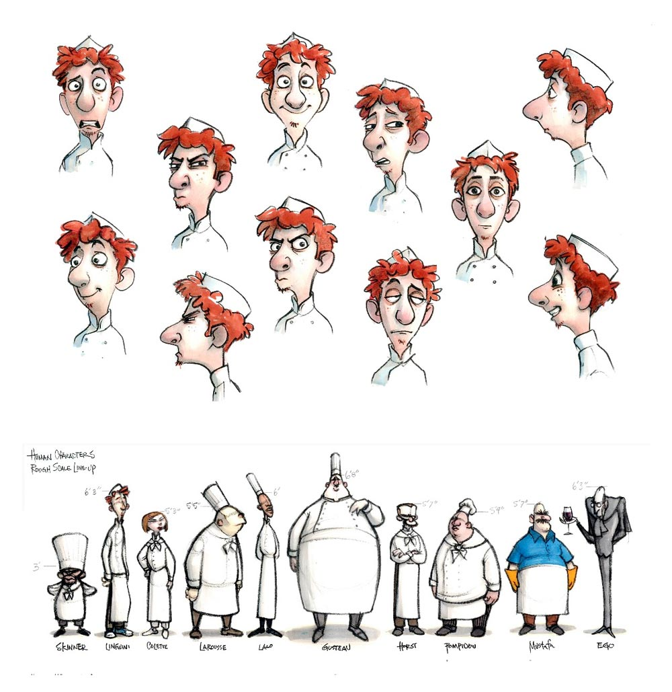
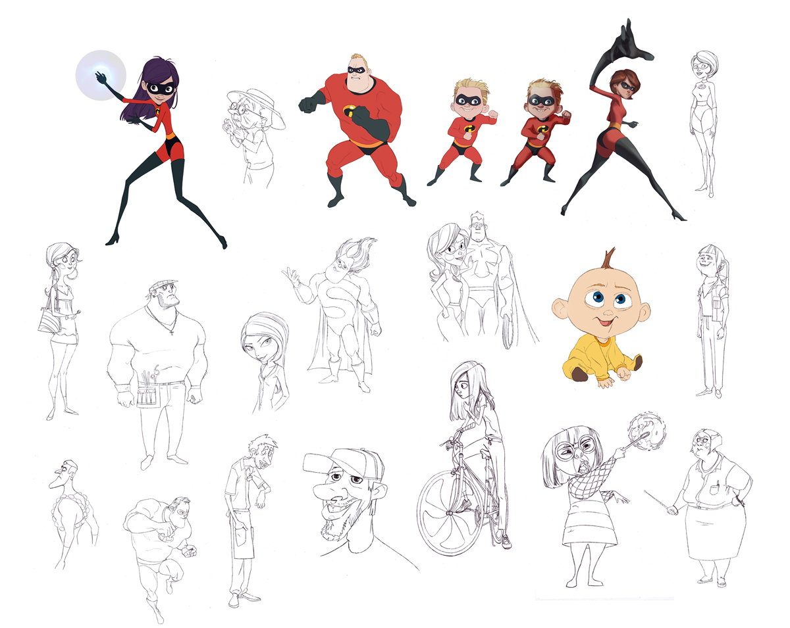
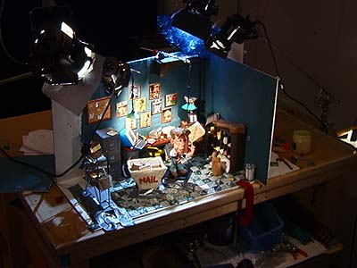
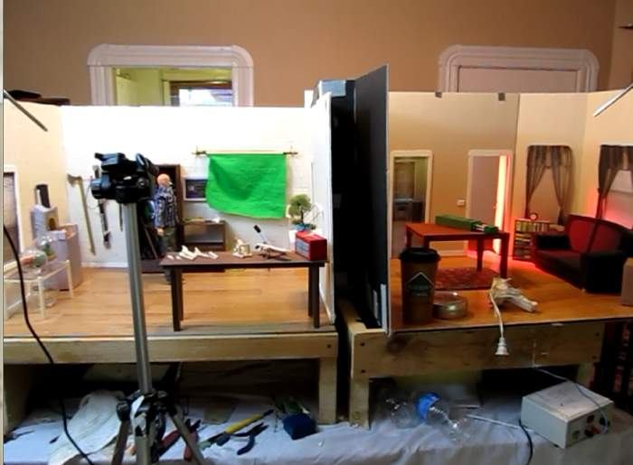

Carefully Planned "Key-out" poses (initial, some in-betweens and final) Allows animator to hit certain poses at exactly the right time
Straight ahead
Spontanous and (hit-and-miss) more "creative" Animator literally works straight ahead from first drawing
Motion Theory
Animation is not simply the process of moving things it is the art of bringing inanimate objects to life
Animators are the actors breathing life, giving characters personality & believability
Great observer of subtlety + Awareness for the law of physics + Nailing the timing
6 Laws of subtlety
#1. Squash & Stretch (Fluidity & Energy)
#2. Anticipation (Build-up)
#3. Follow Through & Overlapping Action
6 Laws of Subtlety (cont'd)
#4. Slow-in & Slow-out (start & finish slow)
#5. Secondary Action (not Overlap, but support)
#6. Exaggeration (increase impact)
Common types of animation
Stop-motion
Models and puppets can come in different forms clay, foam, wire-armature covered puppet, etc
Pixilation
Closely resemble stop-motion, but instead of models & puppets animator utilizes lifesize objects and people
Cut-out
Cut outs of artwork and photographs
2D Digital
Each frame drawn separatedly on paper or a graphics tablet which is then colored and composited together with a background
3D Digital
CGI (Computer Generated Imagery) involves the use of computer to create geometric data rendered out to create 3D shapes current technology allow animators to create both photo-realistic and highly stylized animaion
Well combination of shapes & Lines > Facial expression, action poses, etc..


Environment
Striking yet uncluttered to allow characters to work within it
Environment research: Photographs & sketchbooks
Corners (interior pov), Lighting, Bareness (DOF)


Staging
Shots should be purposeful and clear - A centre of Interest
Motion - eyes are drawn towards movement, hence don't make it too busy
Composition - Eyes scan from L to R. Frame properly using Focus, lighting & depth
"All I need to make comedy is a park, a policeman and a pretty girl." - Charlie Chaplin
DESIGN & TESTING
Regardless of whether you are planning to make a cut-out piece or 2D drawing, your design phase would involve planning and building your characters. You would also make your backgrounds and test the look of the piece under camera.
Even the most experience animator will need to test his or her artwork. This is the point where you will find out just how challenging a task you have set yourself, and it is often during this phase that you will revisit your script or design to simplify or alter the narrative. The testing phase really continues throughout the production process.